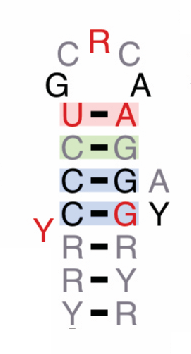

SimRNA is a method for RNA 3D structure modeling with optional restraints.
SimRNA uses a coarse-grained representation, relies on the Monte Carlo method for sampling the conformational space, and employs a statistical potent
ial to approximate the energy and identify conformations that correspond to biologically relevant structures.
RNArchitecture is a database that provides a comprehensive description of relationships between known families of structured ncRNAs, with focus on sequence and structure similarities.
NPDock (Nucleic acid-Protein Dock) is a web server for modeling of RNA-protein and DNA-protein complex structures.
It combines GRAMM for global macromolecular docking, scoring with a statistical potential, clustering of best-scored structures, and local refinement.

Clustering routines of evolutionary conserved regions (helical regions) for RNA fold prediction.
Splicing modulation
Cwc15 stabilizes the spliceosomal catalytic interactions in the first-step conformation.

The lower U6-ISL stem is flexible and changes during spliceosomal catalysis.
This feature is conserved across eukaryotes, in U6atac and domain V of group II introns.

A toolbox to analyze sequences, structures and simulations of RNA
A collective, CASP-like, experiment for blind RNA tertiary structure prediction.
A quality prediction method for scoring RNA 3D models based on the deep learning.

Science Club. A place to discuss SCIENCE.
Do Science! Spin-off. A place to discuss RNA SCIENCE.
Emacs is my rifle. There are many editors like it, but this one is mine.
Without me, my rifle is useless. Without my rifle, I am useless.

Fun to read & fun to write - eXtreme eXtendable note taking system for nerds/geeks (including scientists!) = beautiful html generator of your markdown-based notes.
Papers
Google Scholar: Citations 403, H-index: 9; Publons: Peer-review: 12 [as of 190417].
In revision:
Rearrangements within the U6 snRNA core during the transition between the two catalytic steps of splicing
Eysmont K., Matylla-Kulińska K., Jaskulska A., Magnus M., Konarska M.
Molecular Cell
In preparation:
mqapRNA - quality assessment of RNA 3D models
M. Magnus, A. Bogdanowicz, and J. M. Bujnicki
http://genesilico.pl/mqapRNA
RNA-Puzzles Bench: A computational resource of RNA 3D structure benchmark datasets, assessment metrics and structure manipulation tools
Z. Miao*, M. Magnus*, M. Antczak, P. Lukasiak, M. Szachniuk, J. Wiedemann, T. Zok, J. M. Bujnicki, and E. Westhof
https://github.com/mmagnus/rna-tools
Submitted:
[14] RNA 3D Structure Prediction Using Multiple Sequence Alignment Information
M. Magnus, K. Kappel, R. Das, and J. M. Bujnicki
https://github.com/mmagnus/EvoClustRNA
BMC Bioinformatics, 2018
Published:
[13] Eysmont, K., Matylla-Kulinska, K., Jaskulska, A., Magnus, M., & Konarska, M. M.
Rearrangements within the U6 snRNA core at the transition between the two catalytic steps of splicing.
Molecular Cell (in press) 2018
[12] RNArchitecture: a database and a classification system of RNA families, with a focus on structural information
P. Boccaletto, M. Magnus, C. Almeida, A. Zyła, A. Astha, R. Pluta, B. Bagiński, E. J. Jankowska, S. Dunin-Horkawicz, T. K. Wirecki, M. J. Boniecki, F. Stefaniak, and J. M. Bujnicki
Nucleic Acids Research, vol. 46, no. 1, pp. D202–D205, Jan. 2018. http://genesilico.pl/RNArchitecture
[11] RNA-Puzzles Round III: 3D RNA structure prediction of five riboswitches and one ribozyme
Z. Miao, R. W. Adamiak, M. Antczak, R. T. Batey, A. J. Becka, M. Biesiada, M. J. Boniecki, J. M. Bujnicki, S.-J. Chen, C. Y. Cheng, F.-C. Chou, A. R. Ferré-D'Amaré, R. Das, W. K. Dawson, F. Ding, N. V. Dokholyan, S. Dunin-Horkawicz, C. Geniesse, K. Kappel, W. Kladwang, A. Krokhotin, G. E. Łach, F. Major, T. H. Mann, M. Magnus, K. Pachulska-Wieczorek, D. J. Patel, J. A. Piccirilli, M. Popenda, K. J. Purzycka, A. Ren, G. M. Rice, J. Santalucia, J. Sarzynska, M. Szachniuk, A. Tandon, J. J. Trausch, S. Tian, J. Wang, K. M. Weeks, B. Williams, Y. Xiao, X. Xu, D. Zhang, T. Zok, and E. Westhof, RNA, vol. 23, no. 5, pp. 655–672, May 2017.
[10] SimRNAweb: a web server for RNA 3D structure modeling with optional restraints
M. Magnus*, M. J. Boniecki*, W. K. Dawson, and J. M. Bujnicki
Nucleic Acids Research, vol. 44, no. 1, pp. W315–9, Jul. 2016. https://genesilico.pl/SimRNAweb/
[9] Modeling of Protein-RNA Complex Structures Using Computational Docking Methods.
B. Madan, J. M. Kasprzak, I. Tuszyńska, M. Magnus, K. Szczepaniak, W. K. Dawson, and J. M. Bujnicki Methods Mol. Biol., vol. 1414, no. 21, pp. 353–372, 2016.
[8] RNA 3D Structure Modeling by Combination of Template-Based Method ModeRNA, Template-Free Folding with SimRNA, and Refinement with QRNAS. P. Piatkowski, J. M. Kasprzak, D. Kumar, M. Magnus, G. Chojnowski, and J. M. Bujnicki
Methods Mol. Biol., vol. 1490, no. Suppl, pp. 217–235, 2016.
[7] NPDock: a web server for protein-nucleic acid docking
I. Tuszyńska, M. Magnus, K. Jonak, W. K. Dawson, and J. M. Bujnicki,
Nucleic Acids Research, vol. 43, no. 1, pp. W425–30, Jul. 2015. http://genesilico.pl/NPDock
[6] RNA-Puzzles Round II: assessment of RNA structure prediction programs applied to three large RNA structures
Z. Miao, R. W. Adamiak, M.-F. Blanchet, M. J. Boniecki, J. M. Bujnicki, S.-J. Chen, C. Y. Cheng, G. Chojnowski, F.-C. Chou, P. Cordero, J. A. Cruz, A. R. Ferré-D'Amaré, R. Das, F. Ding, N. V. Dokholyan, S. Dunin-Horkawicz, W. Kladwang, A. Krokhotin, G. Lach, M. Magnus, F. Major, T. H. Mann, B. Masquida, D. Matelska, M. Meyer, A. Peselis, M. Popenda, K. J. Purzycka, A. Serganov, J. Stasiewicz, M. Szachniuk, A. Tandon, S. Tian, J. Wang, Y. Xiao, X. Xu, J. Zhang, P. Zhao, T. Zok, and E. Westhof
RNA, vol. 21, no. 6, pp. 1066–1084, Jun. 2015.
[5] Computational modeling of protein-RNA complex structures
I. Tuszyńska, D. Matelska, M. Magnus, G. Chojnowski, J. M. Kasprzak, L. P. Kozlowski, S. Dunin-Horkawicz, and J. M. Bujnicki
Methods, vol. 65, no. 3, pp. 310–319, Feb. 2014.
[4] Computational modeling of RNA 3D structures, with the aid of experimental restraints
M. Magnus*, D. Matelska*, G. Lach, G. Chojnowski, M. J. Boniecki, E. Purta, W. K. Dawson, S. Dunin-Horkawicz, and J. M. Bujnicki
RNA Biol, vol. 11, no. 5, pp. 522–536, 2014.
[3] MetaLocGramN: A meta-predictor of protein subcellular localization for Gram-negative bacteria
M. Magnus, M. Pawlowski, and J. M. Bujnicki
BBA - Proteins and Proteomics, vol. 1824, no. 12, pp. 1425–1433, Dec. 2012. http://genesilico.pl/MetaLocGramN/
[2] Structural bioinformatics of the human spliceosomal proteome
I. Korneta, M. Magnus, and J. M. Bujnicki,
Nucleic Acids Research, vol. 40, no. 15, pp. 7046–7065, Aug. 2012. http://iimcb.genesilico.pl/SpliProt3D
[1] Structures of MicroRNA Precursors
P. Kozlowski, J. Starega-Roslan, M. Legacz, M. Magnus, and W. J. Krzyzosiak
Current Perspectives in microRNAs (miRNA), no. 1, Dordrecht: Springer, Dordrecht, 2008, pp. 1–16.